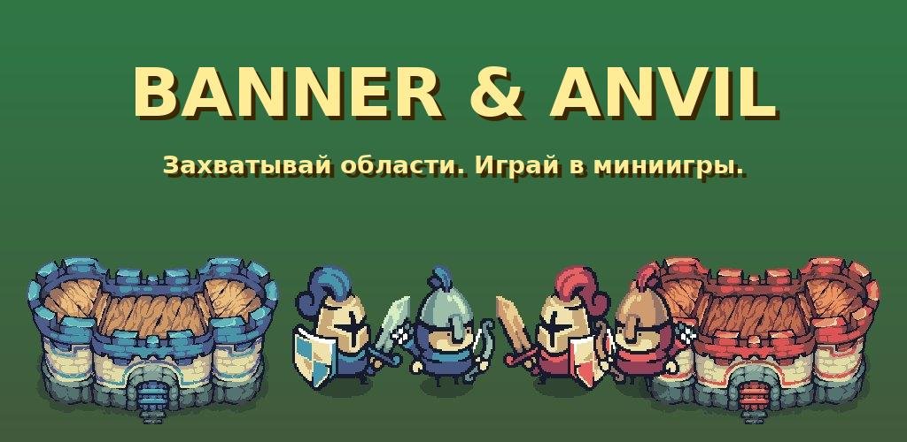
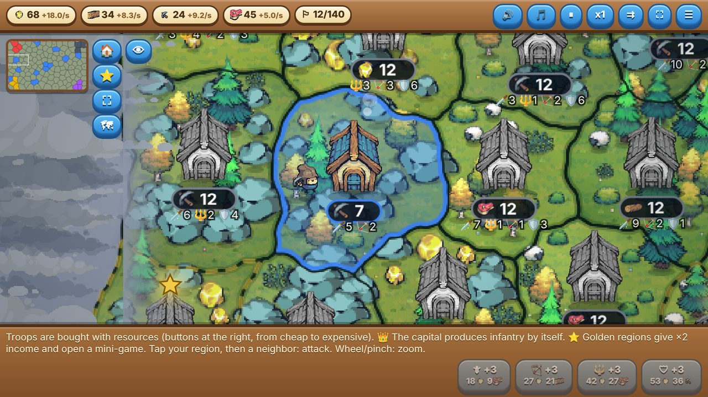
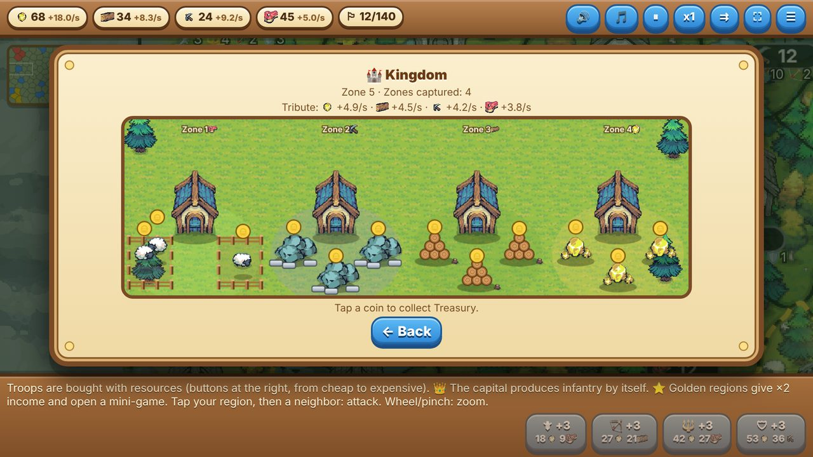
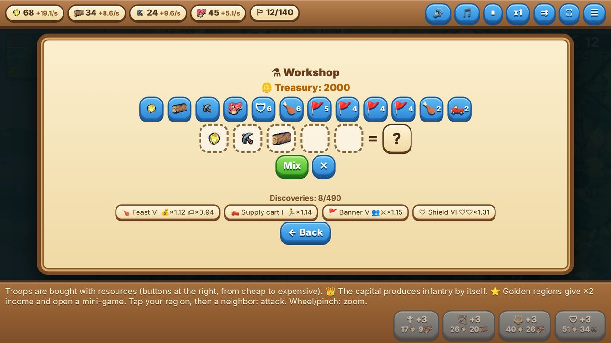
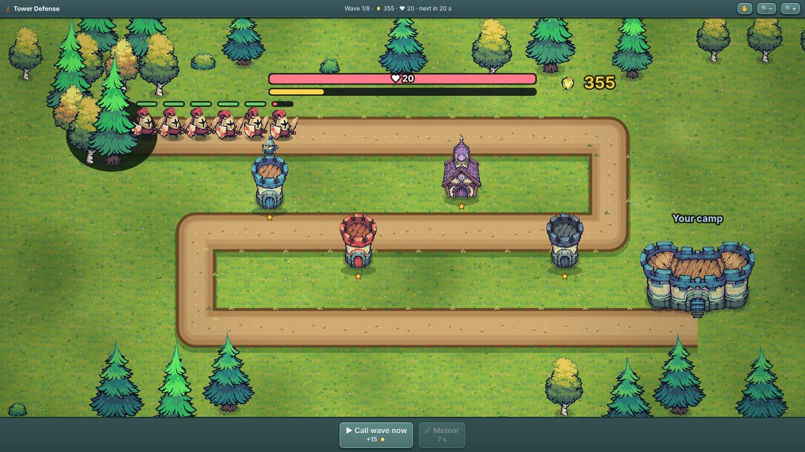
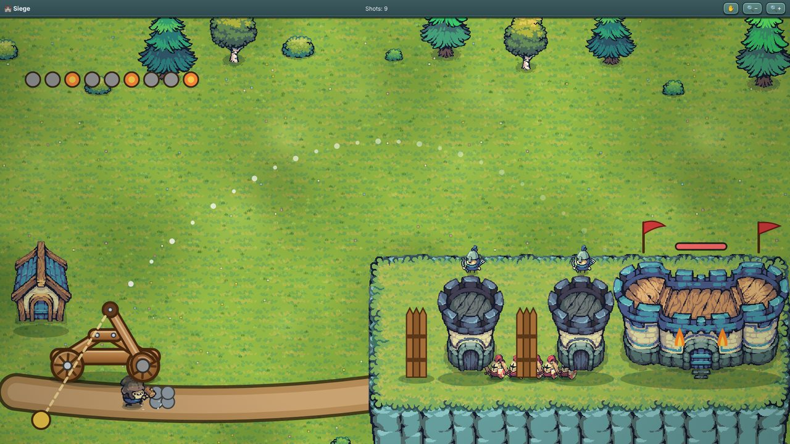
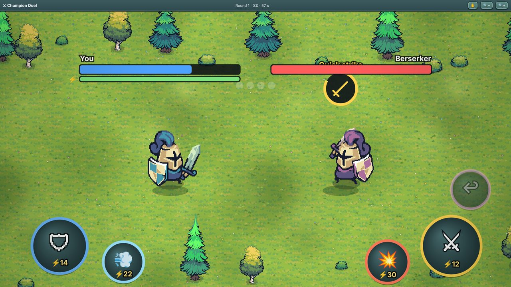
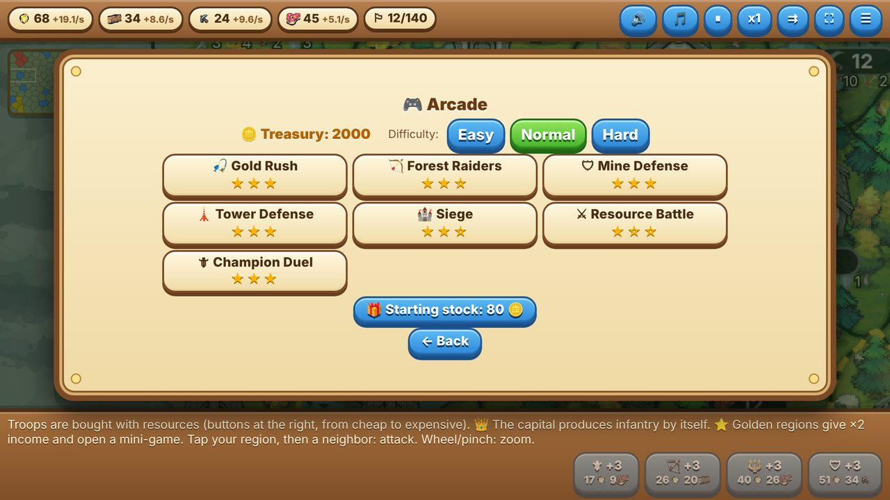
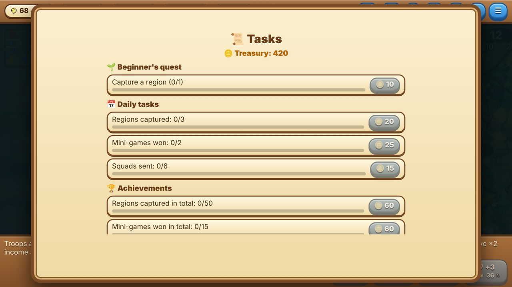
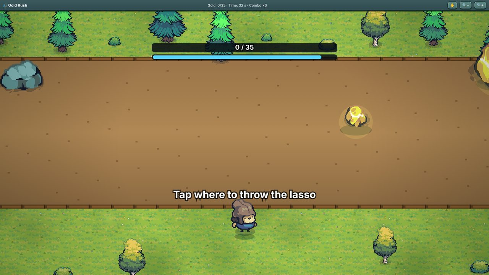

Banner & Anvil
Уютная стратегия на большой карте из 140 областей. Захватывайте земли, собирайте армию, играйте в мини-игры за золотые области, смешивайте ресурсы в мастерской и развивайте своё королевство. Бесплатно, без рекламы и покупок.
A cozy strategy game on a big map of 140 regions. Conquer lands, build your army, play mini-games for golden regions, mix resources in the workshop and grow your kingdom. Free, no ads, no in-app purchases.
Что внутриFeatures
- Большая карта: 140 областей, замки растут вместе с гарнизоном, соперники-ИИ в трёх уровнях сложности.
- Четыре типа войск: пехота, лучники, копейщики, тяжёлая пехота. Быстрый свайп отправляет солдат, ⇉ автоматически переводит новых воинов из тыла к фронту.
- Семь мини-игр: золотая лихорадка (лассо), лесные налётчики (лук), оборона шахты, защита башнями (с боссами и метеором), осада катапультой, дуэль чемпионов и битва за ресурс.
- Аркада: играйте любую мини-игру отдельно, зарабатывайте звёзды и Казну.
- Королевство: каждая захваченная зона превращается в район с овцами, рудой, брёвнами или золотом и приносит постоянную дань.
- Мастерская: смешивайте ресурсы и находки в сотнях рецептов, чтобы усилить армию.
- Ежедневные задания, квест новичка и достижения.
- 14 языков, мягкая музыка и звуки, автосохранение.
- Big map: 140 regions, castles grow with garrison size, AI rivals on three difficulty levels.
- Four unit types: infantry, archers, spearmen, heavy infantry. A quick swipe sends soldiers; ⇉ automatically moves new troops from the rear to the front.
- Seven mini-games: gold rush (lasso), forest raiders (bow), mine defense, tower defense (bosses and meteor), catapult siege, champion duel and resource battle.
- Arcade: play any mini-game on its own and earn stars and Treasury.
- Kingdom: every captured zone becomes a district with sheep, ore, logs or gold and gives a permanent tribute.
- Workshop: mix resources and discoveries in hundreds of recipes to strengthen your army.
- Daily tasks, a beginner's quest and achievements.
- 14 languages, soft music and sounds, autosave.
СкриншотыScreenshots









КонтактыContact
Вопросы, ошибки, идеи: zenchingames@gmail.com
Questions, bugs, ideas: zenchingames@gmail.com